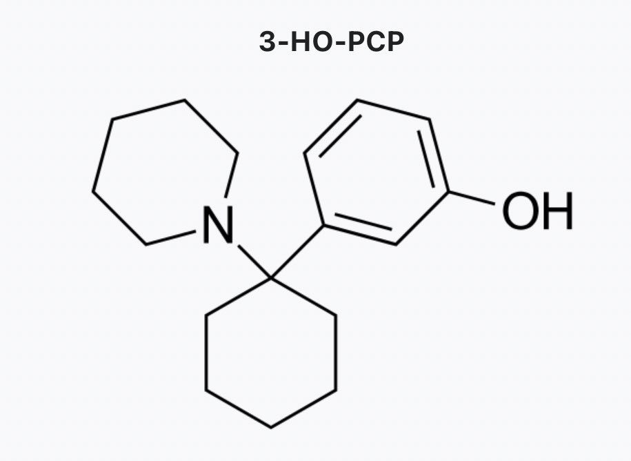

Rhinnschneevall
@RainduRhinns
如果说右美是解离剂中的血清素能共情剂，氯胺酮是解离剂里的致幻剂，那3HOPCP就是解离剂里的安非他明，它在15mg的剂量下就会带来非常严重的躁狂、兴奋及非常类似MDA的幻觉

Rhinnschneevall
@RainduRhinns
3-HO-PCP是一种非常恶劣的毒品，它的致死率远超于其他PCP物质，它几乎是一种近似MDA的纯兴奋剂而非部分共情剂；并加强了所有苯丙胺缺点：狂躁、惊厥、内脏疼痛、身体损害…有不少人认为MDPM的取代位置不对，意外地模拟了苯乙胺与邻位 MDA的构效关系，导致其成为了脏药中的脏药。也是它的畅销原因之一。 https://t.co/a9uZpfhQRT